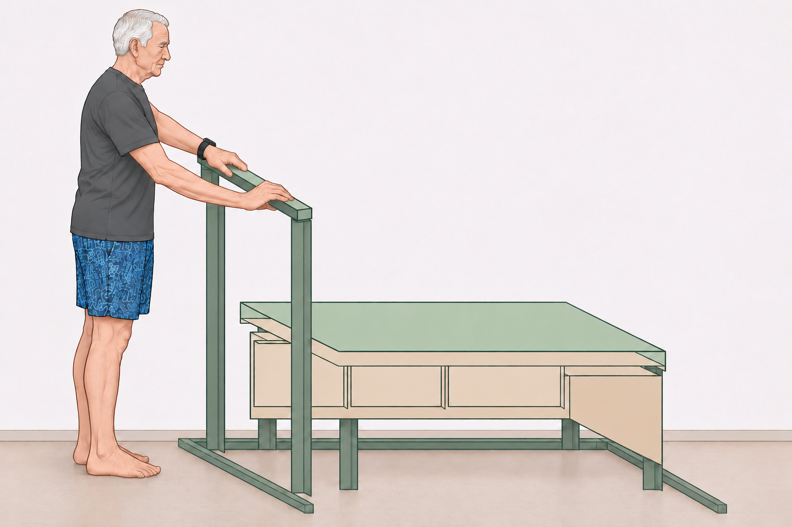

ДОМАШНИЙ ТРЕНАЖЁРСкамья · эскиз от 25 ноября 2026
Примерка перекладины
Перед подъёмом пяток человек подходит к короткому торцу скамьи. Легко ли положить руки на перекладину на этой высоте? Хватает ли места между стойками?

Исходная поза. Поисковая иллюстрация по эскизу скамьи и кадру A из NHS Calf raises.
Вид со стороны человека. Размеры эскиза в миллиметрах. Размечай картон рулеткой.
Собрать фрагмент 1:1
Сложи из картона перекладину длиной 420 мм с наружным сечением 30 × 30 мм. Под ней поставь две стойки шириной 30 мм, вровень с торцами. От пола до низа перекладины – 870 мм. Соедини детали малярной лентой. Помощник придерживает фрагмент со стороны сиденья.
На полу обозначь лентой торцевую сторону основания. Верх перекладины выставь на 900 мм от пола. Проверь 360 мм между внутренними гранями стоек. Оба числа взяты из эскиза и ждут примерки.
Что сказать человеку
"Подойди к скамье и покажи, куда положишь руки перед началом движения". До первого касания держи лист у себя, оставь перекладину без меток.
Пятки остаются на полу, вес – на ногах. Пальцы лишь касаются картона. Если человеку нужна опора при стоянии, обсуди с ним позу по фотографии.
Заполнить после примерки
Дата, версия фрагмента
От пола до верха, мм Просвет, мм
Первое касание левой и правой кисти
Где оказались стопы, что помешало
Что переставить, какой размер повторить
Фото сбоку или запись наблюдателя